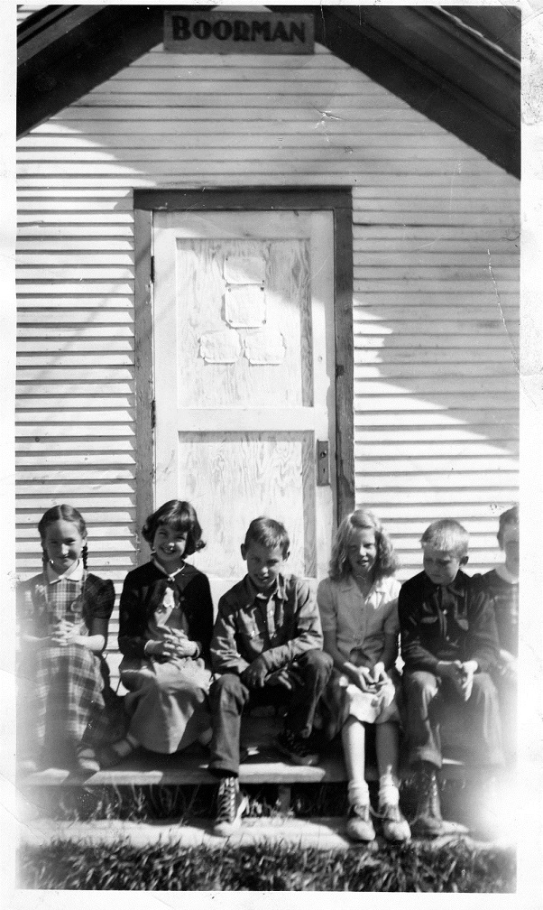

**"A Song for the Land"**
The sun hung low over the quiet fields outside Bigfork, casting long shadows across the land that stretched for miles in every direction. The heat of the day had started to fade, and the crisp evening air began to settle in, a welcome relief after a long, backbreaking day in the hayfields. On the porch of a weathered farmhouse, two sisters sat, worn but content.
Doris, the older of the two, leaned back in her chair, her arms folded across her chest, a peaceful smile on her face. Her sun-bleached hair was tied up in a loose knot, strands falling around her face, framing her high cheekbones. Her hands, though calloused from years of farm work, held a quiet grace as she rested them in her lap.
Beside her, Omi, the younger sister, strummed her guitar gently. The guitar was a little worn too, its wooden frame polished by the touch of time and use. Omi’s fingers danced across the strings with an ease that made it seem as though the guitar were an extension of herself. Her freckled face was flushed from the work, but her eyes sparkled with the joy of the evening’s music. She was sixteen, just beginning to fill out into the woman she would become, though there was still a bit of childhood in her laugh, in the way she tossed her head back and let her voice rise and fall like the hills around them.
The day had been long. The hot sun had made the work harder than usual. The hay had been stubborn, stubborn enough to make Doris’s back ache with every load they lifted onto the wagon, but they had finished it, just as they always did. Together. The cows would have fresh hay for weeks, and their hard work would keep the farm steady.
Now, the air had settled into something softer, the evening breeze carrying the scent of wildflowers and the rich earth of the land they worked. They sat in the stillness, a momentary break from the weight of life, just the two of them on the porch.
Omi plucked a few chords and started to hum under her breath. Doris leaned forward, her hands on her knees. The rhythm felt familiar, the melody comforting.
“You startin’ that one again?” Doris asked, her voice soft, teasing.
Omi grinned, her fingers catching on a wrong note before she fixed it. “It’s my favorite. You know that.” She picked out the tune again, her smile bright as she turned to her sister. “C’mon, sing it with me.”
Doris hesitated only a moment before joining in, her voice rising clear and strong in the evening air.
**“Amazing grace, how sweet the sound, That saved a wretch like me...”**
Their voices harmonized effortlessly, blending in the way they had when they were children, sitting around the kitchen table while their mother worked on supper. Their voices weren’t perfect—not like the ones they’d heard in church, polished and full of training—but they didn’t need to be. In the fading light of the evening, surrounded by the vastness of the land, the song felt as though it were rising from the very earth beneath their feet.
Omi’s fingers worked the guitar’s strings with ease, her mind as much on the music as on the rhythm of the world around them. She wasn’t thinking of how the day had been, or how the next would come, or of anything that didn’t belong to this moment. All that mattered now was the sound of the song, the voice of her sister beside her, and the peacefulness that came with being home.
Doris let the last note of the hymn trail off into the night air, the silence that followed filled with the sounds of crickets and the soft rustle of leaves. She closed her eyes, savoring the brief moment of stillness before turning to Omi with a smirk.
“I still don’t know how you get those chords to sound like that,” Doris said, shaking her head. “I don’t think I’ve ever heard a guitar sound so… sweet.”
Omi laughed, her voice light, teasing. “You just have to know the way the strings like to be talked to.”
Doris rolled her eyes but couldn’t help the smile that tugged at her lips. She picked up the song again, starting from the beginning, but this time Omi joined in with a harmony that seemed to rise from the very earth beneath them, lifting their voices together into the dusk.
The stars would come soon, bright and clear in the crisp Montana sky. But for now, the only light was the soft glow of the porch light, the warmth between the sisters, and the song that filled the air with a quiet hope.
--- **“I once was lost, but now am found, Was blind, but now I see...”**
And in that moment, the world outside the porch—a world of sweat, hard work, and the trials of the land—seemed far away, fading into nothingness. All that mattered was the song, and the bond they shared.
**Title: The Class Photo**
It was an early autumn morning in the early 1960s, the kind of morning that still held a little summer warmth, but hinted at the chill of fall just around the corner. Doris stood with her classmates on the steps of Boorman School, their small country school nestled in the heart of the northwestern Montana mountains. The school, a modest one-room building, stood as a silent witness to decades of children's laughter, games, and memories.
Today, though, it was all about the class photo.
The school had only eight students in the sixth grade, which made it more like a family than a classroom. Doris, the tallest of them all, stood on the second step, beaming with excitement. There was Tommy, with his wild hair and mischievous grin, standing proudly on the top step. Beside him was Sarah, her braids neatly tied, her hands folded primly in her lap. On the lowest step, Ellie and Pete sat with their arms around each other, whispering and giggling as they waited for the photographer to give the signal.
Their teacher, Mrs. Thompson, stood at the top of the steps just behind them, making sure everyone was in line, trying to calm the squirming excitement of the young children. She wore a simple dress, a reminder of how things were simpler in Boorman, and held a clipboard in her hands, checking that all the children were there, as if one of them could slip away and ruin the moment.
Doris couldn’t stop smiling. She loved these moments—these small, ordinary moments that felt so special when they happened. Today, though, was something different. It wasn’t just a regular school day. It was a day when their class would be frozen in time, their faces captured for eternity in a single photograph.
The photographer, a man from the next town over, had arrived early that morning. He set up his camera in front of the school's single white wood door, the one that had seen generations of children come and go. Above it, a weathered old wooden sign hung, its paint chipped and faded. It read: "Boorman School." It was simple, just like everything else about the place, but it made Doris proud.
The door, Doris thought, was a gateway not just to the school, but to the community that had raised them. For so many years, that door had framed the smiles of kids just like her—kids who lived in small cabins and farmhouses, who trekked through the mountains in all kinds of weather, who knew what it meant to be close to nature and to each other. The steps in front of that door had been used for decades as a backdrop for class photos, each one marking a different generation, but all of them bound by the same simple joys and challenges of life in the hills.
"Hold still now," Mrs. Thompson called out, her voice carrying the faintest hint of a smile as she adjusted her glasses.
Doris straightened up, trying her best to look poised and grown-up, though she could feel her knees wobbling with excitement. She and her friends had been talking about this photo for days. Would it turn out well? Would they look silly?
But most of all, Doris thought, *Would it be a memory they could keep forever?*
The photographer adjusted the lens and squinted at them through the viewfinder. "Ready now," he said, with a nod.
*Click.*
The camera snapped, and Doris could almost hear the sound of time itself capturing the moment—freezing it, preserving it like an old postcard from the past.
The children were still for just a second longer, then a ripple of giggles broke out as they all turned to each other.
“It’s done,” Doris said with a sigh of relief, looking at the others. "I think it turned out good."
Tommy jumped off the top step and grinned. “I bet our picture’s going to be up on that wall forever. Just like the ones before us.”
Everyone turned to look at the photos hanging inside the school—the faded, framed images of former classes, their smiling faces almost lost in time. Doris had always wondered what it would feel like to be one of those kids, those kids who had come before her. Now she would be one of them.
As they filed back into the school, their laughter echoing off the old wood walls, Doris felt a sudden burst of pride. The mountains stood tall and quiet behind them, but it was the people, the community, the moments like these, that made Boorman School truly special.
And for a brief moment, Doris could almost imagine herself, years from now, walking up those same steps, showing her own children a photograph of the class of 1962—her class—and telling them, *"That’s me, right there, on the second step, in front of the door to Boorman School."*
It was a simple moment, but it was hers, and it would last forever.
The end.